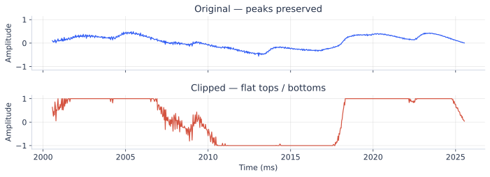
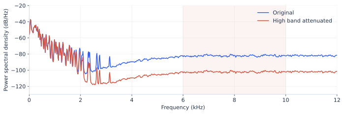
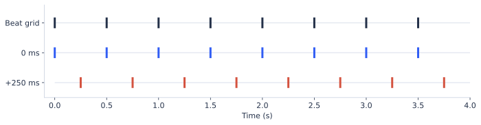
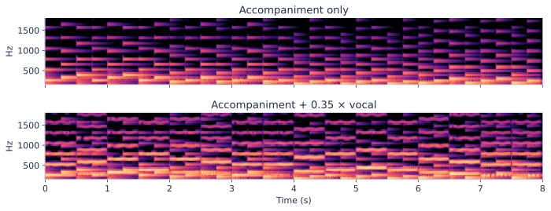
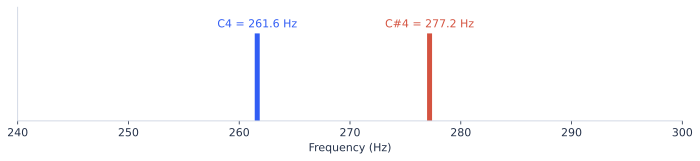

评测 / 先听出问题，再看数值
一段音乐不好，到底哪里不好？
同一段 8 秒教学音频，人工制造五种错误。点选问题，先 A/B 听，再看对应图。全部是程序合成示例，不代表任何真实模型得分。
A/B 播放按均方根幅度 RMS 匹配，避免仅因更响而偏好；并非 LUFS 响度匹配。削波与频带图、数值展示音量匹配前的处理信号。
① 峰顶变平了：削波
A · 原始器乐
B · 放大 6 倍后截到 ±1

判法：本例知道失真来自硬截断。真实生成音频先查连续平顶 / 触顶占比，再听是否破裂、刺耳；不能用“没有触到 ±1”证明没有失真，因为成品可能已经降过音量。
回到数据：剔除破音目标，检查增益处理。不要把“音量归一化”当成修复削波。
② 镲片闷了：高频能量被削弱
A · 原始器乐
B · 人工衰减高频

判法：同一编曲里镲片、空气感变少，这次是处理损伤。但低保真风格可能故意少高频，纯贝斯也可能本来就没有高频。没有“所有音乐在这一波段都要强”的规则。
回到数据：查原文件实际带宽与重采样过程。8 kHz 采样率的音频最高只能表示到 4 kHz；升采样成 48 kHz，不会长出丢失的高频。
③ 音色没坏，但唱声和伴奏分家了
A · 原始对齐混音
B · 伴奏整体晚 250 ms

判法：在规定拍点同步的样本中，对人声 / 伴奏提取起音与节拍，再做一对一时间匹配。本例偏移是已知人为设置；真实音乐有切分、弱起、自由速度，不能要求每个唱字都与鼓点重合。
回到数据：用同一时间窗裁两轨，核对重采样和分离模型的延迟；另外测真实手机清唱，不能只测从训练歌曲拆出来的人声。
④ 任务说“只配伴奏”，结果又哼起来了
A · 仅伴奏
B · 伴奏 + 0.35 × 哼唱

判法：单独听生成伴奏，用人声检测 / 分离辅助定位，再人工确认。本例的 0.35 是加入人声的幅度系数，不是“35% 漏声率”。实际可报“20 条伴奏里 3 条听到人声 = 样本漏声率 15%”（统计示例）。
回到数据：查目标伴奏中的残留；也查输入分离人声里是否带伴奏碎片，防止模型靠碎片猜答案。用干净录音与乐器旋律再测泛化。
⑤ 伴奏全升了一个半音，人声没动
A · 原始调性关系
B · 只升伴奏，不升人声

判法：对照旋律与和弦听冲突，用音高、chroma、调性 / 和弦识别定位。本例错在改变了原有配对关系；不能把不同音就算成错误，否则三和弦 C–E–G 也会被误杀。
回到数据：移调、变速必须同步作用于条件和目标；风格迁移任务则保留约定的旋律 / 结构，允许换音色与合理和声。
从“看一条”到“比较两个模型”
固定一份未见过的测试表：纯音乐 12 题、清唱 12 段、歌词 12 题，每个模型每题生成 2 次，就是每模型 72 条。这里是小规模试跑设定；不要用它代替大规模评估。
| 任务 | 每条先查 | 再盲听 A/B |
|---|---|---|
| “键盘、120 BPM、无人声” | 乐器 / 人声是否匹配；BPM；破音 | 描述遵循、音质、乐句是否自然 |
| 同一段清唱配伴奏 | 延迟、漏声、和声冲突 | 是否托住人声；清唱混进去是否协调 |
| 给定歌词成歌 | CER、漏唱、重复、长静音 | 唱腔、句间衔接、整曲结构 |
同一题用相同长度、生成次数与选样规则，随机隐藏模型名。记录“哪题、哪秒、什么问题”，例如：V07 / 2.0–3.5s / 伴奏漏人声 / 返回目标拆轨复查。改好数据后，用固定测试集重测对应问题。
三种分数，只放在它能回答的位置
| 分数 | 它回答什么 | 具体盲点 |
|---|---|---|
| CLAP 音文相似度 | 这段像不像“吉他、鼓”的描述 | 像吉他仍可能破音；不能可靠证明 120 BPM |
| FAD | 一批生成音乐的嵌入分布与参考集有多接近 | 换参考集、嵌入模型或样本量会变；不是单曲“好听分” |
| 人工分维度评分 / A/B | 是否自然、协调、值得听 | 要固定量表、随机盲听、记录分歧；不能只挑最好样本 |
实现与局限：CLAP · FAD for music。整曲维度可参考 SongBench（2026），这里只保留当前两类任务真正要检查的项。